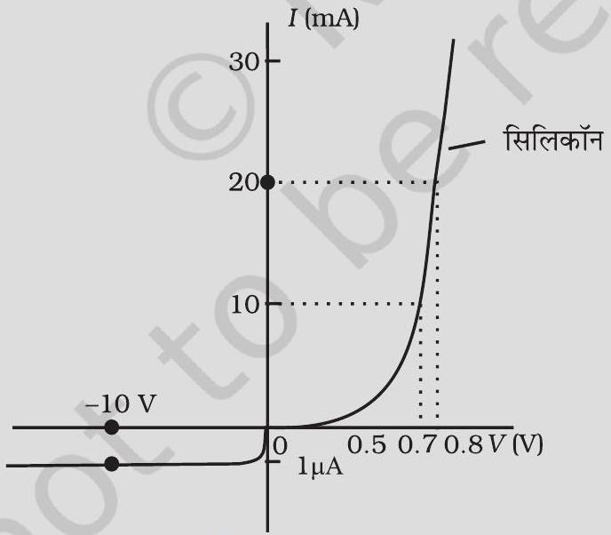

C, Si तथा Ge की जालक (Lattice) संरचना समान होती है। फिर भी क्यों C विद्युतरोधी है जबकि Si व Ge नैज अर्धचालक (intrinsic semiconductor) हैं?
मान लीजिए किसी शुद्ध Si क्रिस्टल में 5 × 1028 परमाणु m-3 है। इसे पंचसंयोजी As से 1 ppm सांद्रता पर अपमिश्रित किया जाता है। इलेक्ट्रॉनों तथा होलों की संख्या परिकलित कीजिए, दिया है कि ni = 1.5 × 1016 m-3 ।
किसी सिलिकॉन डायोड का V-I अभिलाक्षणिक चित्र 14.17 में दर्शाया गया है। डायोड का प्रतिरोध (a) ID = 15 mA तथा (b) VD = -10 V पर परिकलित कीजिए।

ID = 15 mA पर डायोड का प्रतिरोध।
VD = -10 V पर डायोड का प्रतिरोध।
किसी n - प्रकार के सिलिकॉन में निम्नलिखित में से कौन-सा प्रकथन सत्य है?
(a) इलेक्ट्रॉन बहुसंख्यक वाहक हैं और त्रिसंयोजी परमाणु अपमिश्रक हैं।
(b) इलेक्ट्रॉन अल्पसंख्यक वाहक हैं और पंचसंयोजी परमाणु अपमिश्रक हैं।
(c) होल (विवर) अल्पसंख्यक वाहक हैं और पंचसंयोजी परमाणु अपमिश्रक हैं।
(d) होल (विवर) बहुसंख्यक वाहक हैं और त्रिसंयोजी परमाणु अपमिश्रक हैं।
अभ्यास 14.1 में दिए गए कथनों में से कौन-सा p -प्रकार के अर्धचालकों के लिए सत्य है?
कार्बन, सिलिकॉन और जर्मेनियम, प्रत्येक में चार संयोजक इलेक्ट्रॉन हैं। इनकी विशेषता ऊर्जा बैंड अंतराल द्वारा पृथक्कृत संयोजकता और चालन बैंड द्वारा दी गई हैं, जो क्रमशः (Eg)C,(Eg)Si तथा (Eg)Ge के बराबर हैं। निम्नलिखित में से कौन-सा प्रकथन सत्य है?
(a) (Eg)Si<(Eg)Ge<(Eg)C
(b) (Eg)C<(Eg)Ge>(Eg)Si
(c) (Eg)C>(Eg)Si>(Eg)Ge
(d) (Eg)C = (Eg)Si = (Eg)Ge
बिना बायस p-n संधि से, होल p- क्षेत्र में n- क्षेत्र की ओर विसरित होते हैं, क्योंकि
(a) n - क्षेत्र में मुक्त इलेक्ट्रॉन उन्हें आकर्षित करते हैं।
(b) ये विभवांतर के कारण संधि के पार गति करते हैं।
(c) p- क्षेत्र में होल-सांद्रता, n- क्षेत्र में इनकी सांद्रता से अधिक है।
(d) उपरोक्त सभी।
जब p-n संधि पर अग्रदिशिक बायस अनुप्रयुक्त किया जाता है, तब यह
(a) विभव रोधक बढ़ाता है।
(b) बहुसंख्यक वाहक धारा को शून्य कर देता है।
(c) विभव रोधक को कम कर देता है।
(d) उपरोक्त में से कोई नहीं।
अर्ध-तरंगी दिष्टकरण में, यदि निवेश आवृत्ति 50 Hz है तो निर्गम आवृत्ति क्या है ? समान निवेश आवृत्ति हेतु पूर्ण तरंग दिष्टकारी की निर्गम आवृत्ति क्या है?